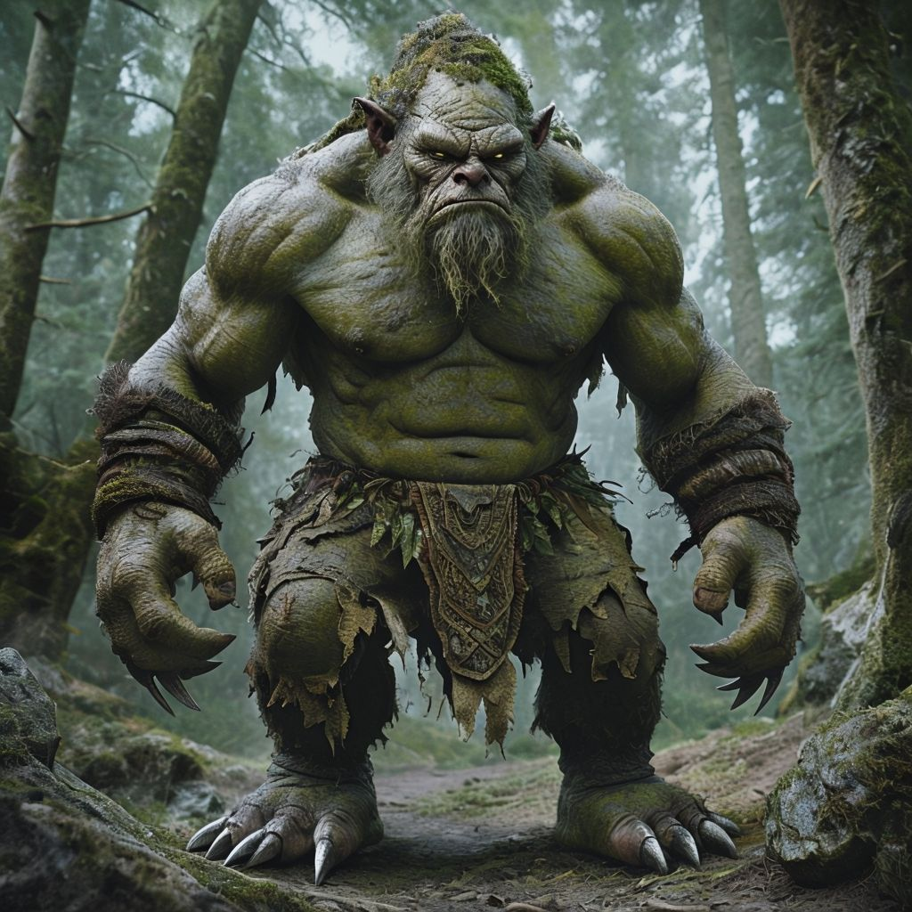

Мифические существа: Тролль

Тролли занимают особое место в северной мифологии. Они воплощают дикость, силу природы и её непредсказуемость. В преданиях тролли изображаются как могучие создания, населяющие труднодоступные места, будь то тёмные пещеры или заснеженные вершины. Несмотря на их суровость, тролли олицетворяют дух природы, её магию и древние тайны .
Мифы о троллях берут начало из скандинавской мифологии. Первые упоминания о них можно найти в древних сагах и эддах. Тролли были частью пантеона существ, символизирующих грубую силу природы. Они ассоциировались с разрушительными стихиями — бурями, оползнями и землетрясениями. В фольклоре разных регионов Скандинавии тролли могли быть как гигантами, так и более мелкими существами, но всегда сохраняли свою враждебность к людям.
Со временем их образ эволюционировал. В средневековых сказаниях они стали объектом страха, но также источником магических знаний и испытаний для героев.
Тролли обычно изображаются гигантами с кожей, напоминающей кору деревьев или шероховатый камень. Их цвет варьируется от серого и зеленоватого до коричневого, что помогает им сливаться с природой. Кожа троллей толстая и грубая, устойчивая к оружию и стихиям. Их рост впечатляет: от 3 до 15 метров, в зависимости от легенды, что делает их грозными и устрашающими.
Руки троллей огромны, с длинными пальцами, оканчивающимися когтями. Эти когти настолько прочные, что способны разрывать камень. Ноги массивные, как колонны, а ступни часто изображаются босыми, с толстой кожей, защищающей их от острых камней.
Тролли редко носят сложную одежду. Обычно их одежда — это шкуры животных или грубые куски ткани, сплетённые из природных материалов. В некоторых легендах тролли украшают себя камнями и костями, делая их облик ещё более пугающим.
Тролли обладают невероятной физической силой и долголетием. Они практически бессмертны, если не подвергаются воздействию солнечного света. В дневное время солнечные лучи обращают их в камень. Некоторые тролли обладают магическими способностями: могут накладывать проклятия, предсказывать будущее или изменять облик. В некоторых мифах они сторожат древние сокровища или мосты, требуя плату за проход.

Популярные мифы о Тролях
Тролль и мост
В одной из скандинавских сказок тролль обитает под мостом, препятствуя прохожим. Однажды три брата решают пересечь мост. Тролль ловит младшего, но братья обманывают чудовище, говоря, что следующий брат будет больше и вкуснее. В конце концов, старший брат, вооружённый мечом, побеждает тролля.
Тролль-страж сокровищ
Говорят, что многие тролли охраняют горные пещеры, наполненные золотом и драгоценностями. Один из мифов рассказывает, как тролль предложил герою драгоценный меч в обмен на его голос. Герой обманул тролля, использовав магический амулет, и забрал сокровища.
Популярные легенды о Тролях
Каменные великаны
В далёкой долине жили три тролля, которые каждую ночь выходили на охоту за людьми. Но однажды хитрый пастух заманил их в открытую местность. На рассвете первые лучи солнца превратили троллей в каменные статуи, которые до сих пор можно увидеть в виде причудливых скал.
Зеркальная река
В горной деревне жила девушка, которая нашла тролля, плачущего у реки. Он рассказал, что его украденный глаз спрятан в зеркальной воде. Девушка вернула глаз, и тролль, в благодарность, предсказал будущее её деревни. Однако он предупредил, что, если люди начнут загрязнять реку, тролль вернётся, чтобы уничтожить их.
Тролли — одни из самых загадочных и величественных существ мифологии. Их внешний вид, способности и связь с природой делают их яркими персонажами, которые продолжают вдохновлять художников, писателей и кинематографистов. Они напоминают нам о том, как важно уважать силы природы и не забывать о её тайнах.
Спасибо, что прочли статью! Если вам понравилось, ставьте лайк и подписывайтесь, чтобы узнавать больше о мире мифических существ!
Популярные мифы о Тролях
Популярные мифы о Тролях
Популярные мифы о Тролях
Популярные мифы о Тролях
Популярные мифы о Тролях
Популярные мифы о Тролях
- Популярные легенды о Тролях
- Популярные легенды о Тролях
- Популярные легенды о Тролях
- Популярные легенды о Тролях
- Популярные легенды о Тролях
- Популярные легенды о Тролях
- Популярные легенды о Тролях
- Популярные легенды о Тролях
- Популярные легенды о Тролях